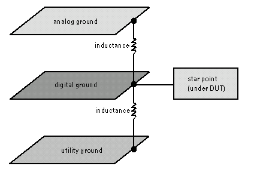
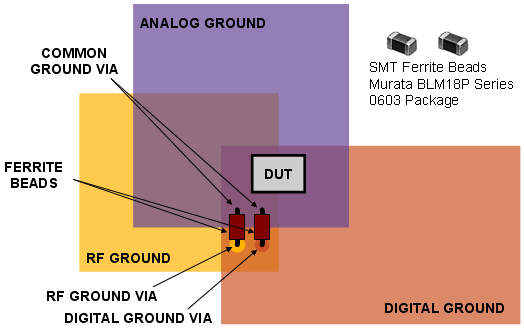

Electrical design for mixed-signal testing
The following guidelines are fundamental when designing DUT boards for mixed-signal devices:
- Physically separate input and output signal lines.
- Use large, separate ground planes for connecting the digital ground and analog ground of the device. Connect the two ground planes with an inductor located as close to the DUT as possible (for example under the socket). An inductor protects the analog ground from spikes on the digital ground. Remove spikes that can be induced via the power supply using filtering techniques (See GP-DPS filter capacitors).
- Keep all connections between digital and analog signals and their respective grounds as short as possible. This will reduce parasitic inductance and capacitance.
- Physically separate analog and digital signals. If necessary, add a ground layer between analog and digital signal layers.
- If you are using utility lines or external components such as buffers, provide a separate ground layer for these components. Connect this ground layer to the other ground planes with an inductor.
- Connect all grounds to a common star point as shown below.

- Use impedance-matched coaxial cables for all high frequency or low amplitude signals. Coaxial cables shield the signals from radiating or picking up noise. Matching the source impedance will provide maximum signal power and minimum distortion. Connect the shields of digital signal cables to digital ground and the shields of analog signal cables to analog ground.
- If possible, use separate power supply channels for supplying the digital and analog circuits of the DUT.
- Note that in the figure above, the lower inductance between utility ground and digital ground
is not absolutely necessary.CAUTION PS400 Card DUT board design: The ESD protection circuits clamp the I/O line to the pin electronics HARD to the respective internal power supply rails (-4 and +8V) even in the DISCONNECT state. This means that if you need to wire up "high voltage" resources to the same device pin (in some power management and high volt programming applications, for example) you MUST install additional relays ON THE DUT board to separate PS400 from the HV resource. Otherwise, you will permanently damage the PS400 Pin Scale card. This also means that DUT boards designed for PS800 and PS3600 applications may not always be suitable for PS400 applications.
Connection between ground layers using ferrite beads or inductor chips
In this case magnetic decoupling devices such as ferrite beads, or inductive decoupling devices like inductor chips are placed in the vertical grounding connections.
Note This solution was recommended when SOC devices were still very
EMC sensitive. Except for Mixed Signal boards and grounding solutions, i.e. for the majority of
today's SOC applications, this method is considered to be over-designed or undesirable.
